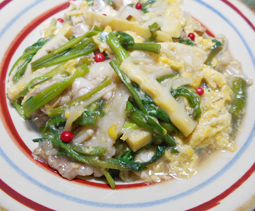

野ゼリと豚肉の卵とじ
- 調理時間：15分
- （一人当たり）
- カロリー：315kcal
- たんぱく質：19.4g
- 脂質：17.4g
- 炭水化物：16.1g
- 塩分：2.5g


＜２人分＞
- 豚肉
- 100g
- 片栗粉
- 少々
- 野ゼリ
- 1把(50g）
- エノキタケ
- 50g
- タケノコ
- 50g
- 生姜
- 20g
- 卵
- 2個
- ・だし
- 400ml
- ・みりん
- 40ml
- ・薄口しょうゆ
- 30ml
- 植物油
- 少々
- ピンクペッパー
- 適宜
煮汁


- 豚肉は食べやすい大きさに切り、片栗粉をまぶしておく
野ゼリ、エノキタケ、タケノコは4㎝長さに切る
生姜は4㎝の千切り。 - フライパンに油をしき生姜を炒め香りが出たら、
煮汁の材料を加えてひと煮立ちさせ、エノキタケ、タケノコ、野ゼリを
加えて煮詰める。 - 豚肉を加えて、火を通す。
とろみがついたところに、溶き卵を回しながら流し入れる。
※あまりかき混ぜないで、半熟状にふんわり仕上げる。 - 仕上げに、ピンクペッパーを散らす。
野ゼリと豚肉の卵とじ
万葉の時代から「春の七草」の筆頭野菜として利用されてきたセリはビタミンＡ、鉄分に富み、冬場に貴重な緑黄色野菜のひとつです。βカロテンも多く、薬効としては風邪予防も上げられます。これは、よい香りのもとである葉や茎に含まれる精油成分のもつ発汗による効果です。冷え性には、成葉を粗く刻み入浴剤として用いてもよいですし、花の咲いた野ゼリは、陰干しして、熱湯を注いで飲むとカリウムの緩下作用、利尿効果があります。